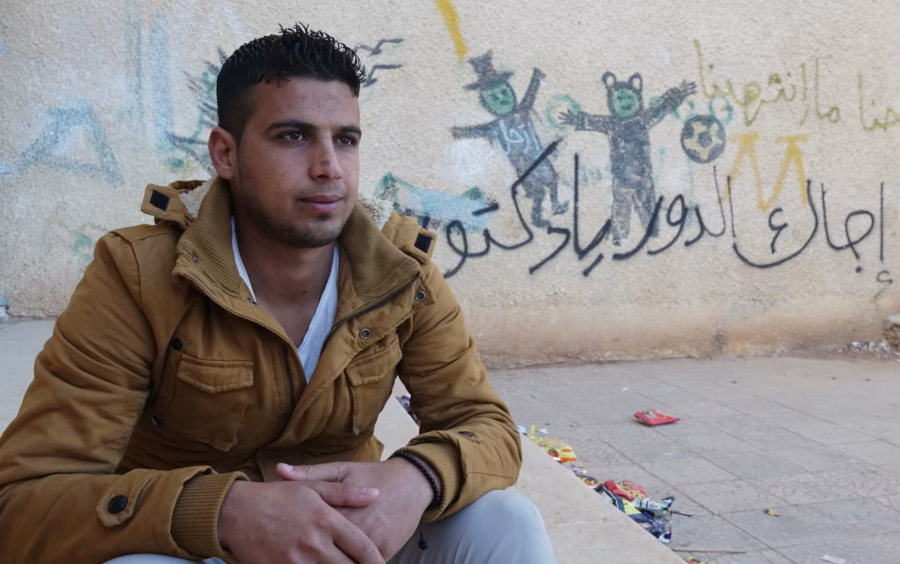
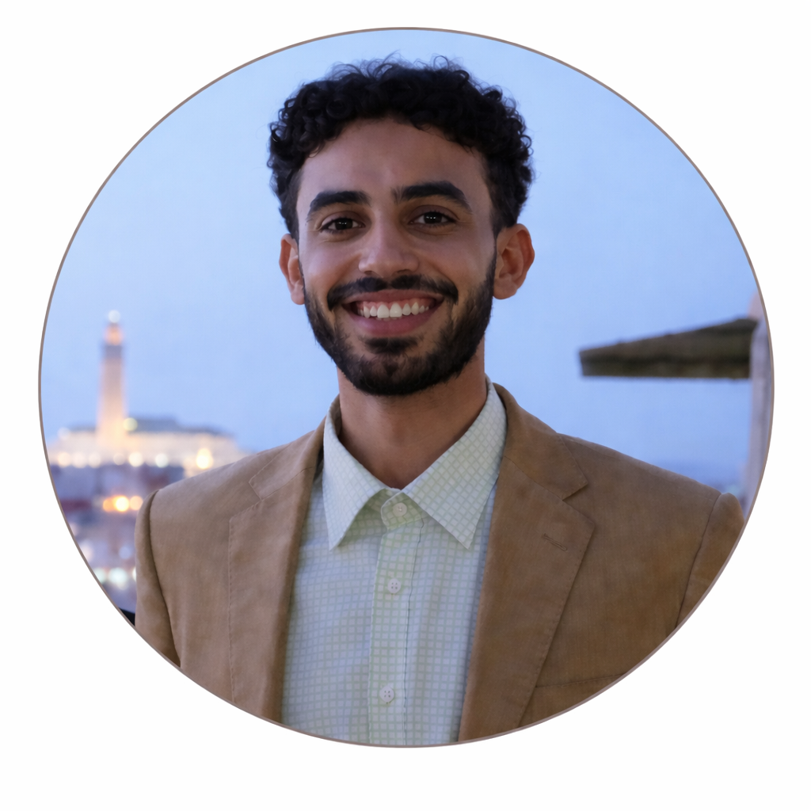
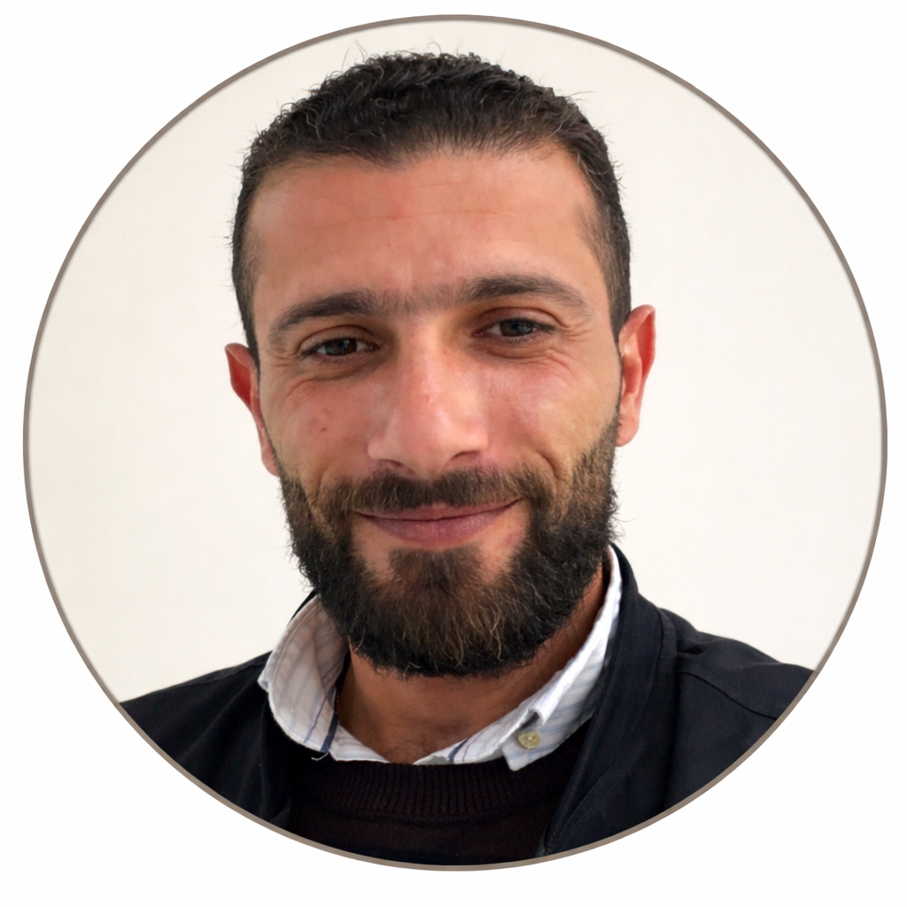
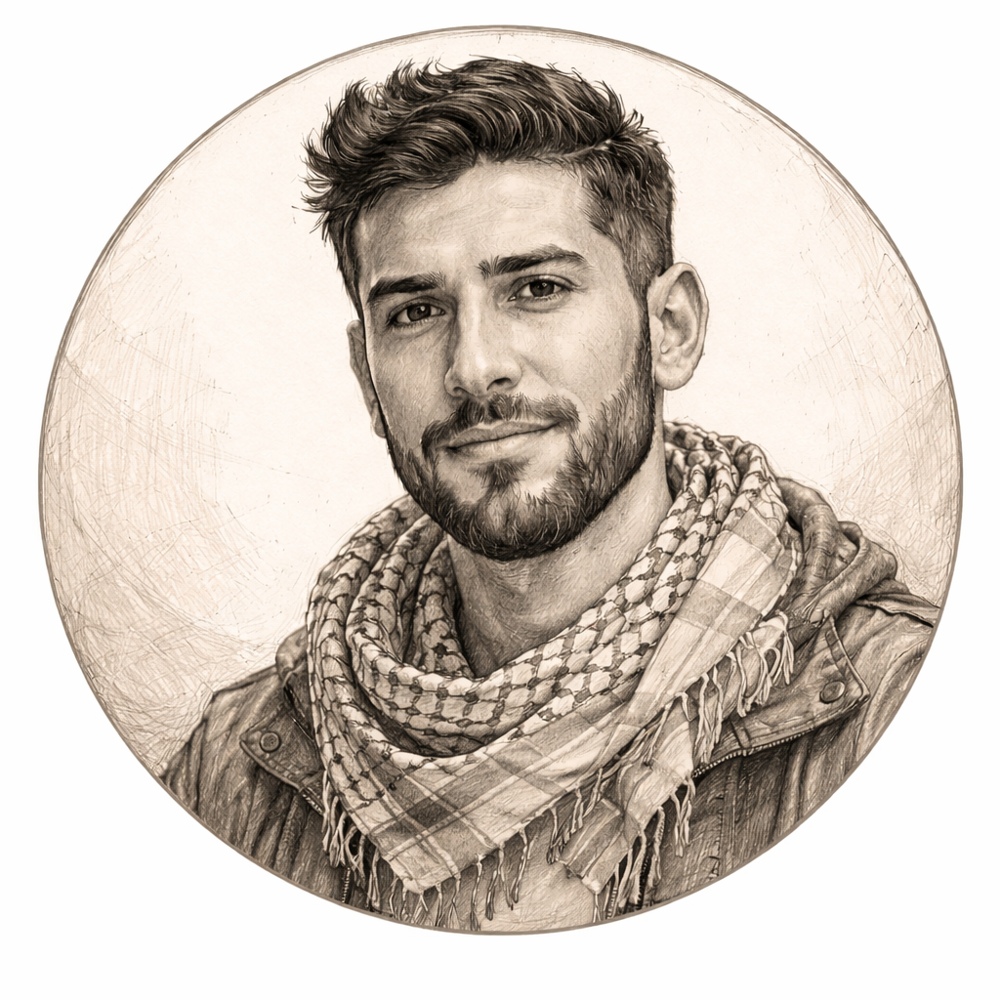
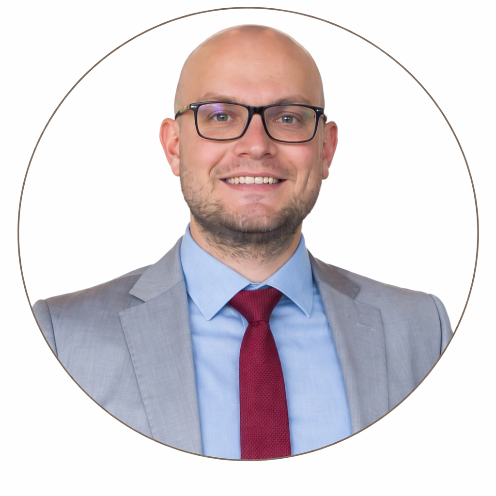
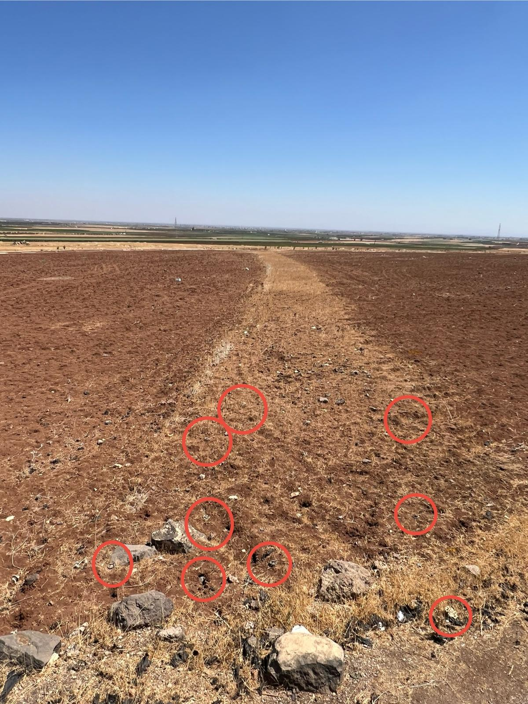
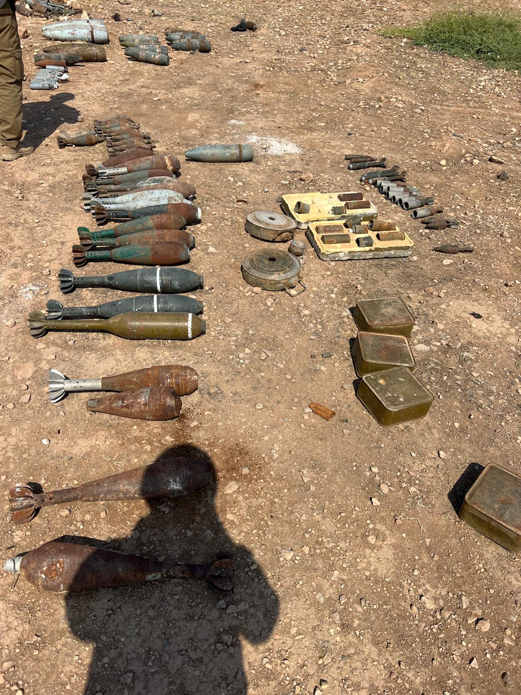

Syria Reborn: Reconstruction, Return, and the Movement of Displaced People
Returning to a Homeland Transformed
Ahmad walked down a bustling street through the Daraa Al-Balad neighborhood, the historical city center of the southern Syria city of Daraa. This neighborhood, known as the birthplace of the protests that kickstarted the revolution in 2011, had suffered for its defiance (Exhibit 1). Destroyed buildings framed the road ahead, yet their debris proved a limited hindrance to the swarm of cars driving on whichever side of the road was fastest. Memories both nostalgic and haunting flickered as Ahmad strolled past a market stall, an encouraging sign of a recovering economy. Behind him were the streets he played soccer on as a kid, as well as the site of his brother's death during the revolution. Ahead, his family's house, one of many renovated and repaired in just the month since he had returned from Germany (Exhibit 2). This was his first trip home since he left 10 years ago, and it was coming to an end. As he reflected on Syria's troubled past and its hopeful future, a breeze picked up around him. For a country so often tormented by the winds of global empires, Ahmad pondered whether the winds would begin to blow favorably. He simultaneously questioned his own path. As he often said, his heart was in Syria but his mind was in Germany. With preparations to leave the country beginning, he wondered: would he ever return for good? What might a life in Syria look like in the long-term?
Setting the Stage
Modern-day Syria sits at the heart of the Levant, the crossroads of the western Asian and Eastern Mediterranean regions that comprise the modern day Middle East (Exhibit 3). Etymologically, Levant is derived from the French word Levant, meaning rising, referencing the direction of the sunrise, fitting for a region that has long been central to the day's dominating civilizations. Syria has long belonged to the dominant empire of the given age - Sumerians, Assyrians, Babylonians, Egyptians, Persians, Greeks, Romans, and Ottoman - due to its fertile plains, mild winters and hot summers, and beautiful beaches. [1][2]
Following the gradual collapse of the Ottoman empire in the years leading to World War I, Syria was secretly mandated to the French zone of interest under the Sykes-Picot agreement, triggering twenty years of occupation prior to de facto independence and official UN recognition in 1946. The following twenty years were marked by political instability surrounding the power vacuum in Syria, successive coups, and violent power struggles until the 1963 Ba'athist military coup. This coup ultimately brought Hafez al-Assad to power in 1970, setting the stage for a brutal forty year authoritarian rule that would only come to an end with a devastating civil war. [3]
Hafez al-Assad's regime consolidated power among the minority Alawite population, a Shia-derived sect, who constituted approximately 10-15% of the Syrian population, compared to a majority Sunni Muslim population. The regime packed Alawite control into military, intelligence, and political institutions, creating tension with the Sunni population. Perhaps foreshadowing the 2011 Civil War was the Assad regime's brutal Hama Massacre of 1982, where up to 40,000 people, mostly civilians, were massacred in a successful attempt to quell a Sunni Islamist uprising through the Muslim Brotherhood. During this period, "a complete siege was imposed on the city, basic services were cut off, and the attack was characterized by indiscriminate shelling, summary executions, widespread arrests, and torture." [4]
Decades later, a combination of structural and environmental factors once again brought Syria to the center of the world stage: a devastating drought, economic stagnation, brutal repression, and contagion from the Arab spring created the kindling needed to spark a revolution. Inspired by the Arab Spring, teenage boys in Daraa, Syria acted in defiance of the regime, painting graffiti on their school reading أجاك الدور يا دكتور, translating to "It's your turn, doctor," referencing Bashar al-Assad's training as an ophthalmologist. This anti-government messaging led to the arrest and brutal torture of the teenage boys, catapulting this poor, rural southern town near the border with Jordan into being the cradle of the Syrian revolution (Exhibit 4). [5]
Syria in Conflict (2011 – 2024)
Starting in late 2010, pro-democracy, anti-government protests and uprisings, known as the Arab Spring, led to the quasi-peaceful transitions of power in Tunisia and (to a lesser-extent) Egypt. Inspired by such popular movements, a wave of pro-democracy protests across Syria erupted, with many hoping for a similar outcome to end the 40 year rule by the Assad family. The Assad regime's violent response to the uprising in Daraa set the tone for violence over concessions, foreshadowing the violence to come over the next 13 years. Shortly thereafter in mid-2011, a group of military defectors formed the Free Syrian Army (FSA), setting the stage for organized domestic rebellion against the authoritarian regime. [6]
In the years following, the civil war expanded beyond a fight between the regime versus the people. Soon enough, Syria was embroiled in a global proxy war, with international support for the Assad regime from Russia, Iran, Hezbollah, and Shia militias. Conversely, the opposition group possessed international supporters with a common goal of toppling Assad, but suffered from disorganization and competing support from Turkey, Saudi Arabia, the UAE, and the United States. Lastly, a complicating factor was the rise of ISIS, which sought to control territory in Syria and Iraq to create an Islamic caliphate.
In its attempts to control the territory, the Syrian government employed the playbook from the Hafez government during the Hama Massacre: surround and siege; cutoff food, water, and electricity; and control, leveling cities where needed. Russia's intervention and support of the government led to massive gains between 2015 - 2020, setting the Assad regime up for victory. Motivated by its need to retain strategic bases in the region and regain global hegemony following its annexation of Crimea, Russia supported Assad with airpower and airstrikes that indiscriminantly leveled cities. Eventually this support yielded success, allowing the regime to recapture Aleppo, one of the opposition's stronghold and Syria's largest city. Attributable to both Russian and Iranian/Hezbollah support, "by 2020, Assad forces held around 60% to 70% of Syrian territory and, despite continued violence and fighting, there was little significant change in zones of control again until 2024" (Exhibit 5) [7][8][9]
A confluence of events led to the rapid collapse of the Assad regime over a matter of weeks at the end of 2024. Since the Russian invasion of Ukraine in February 2022, which was met with far greater military resistance from Ukraine, Russian support of Assad waned. Further, Iran and Hezbollah suffered strategic military losses including Israeli strikes following the October 7, 2023 attack by Hamas, assassination of Hezbollah's military leader, and subsequent ground invasion of Lebanon. The significant weakening of both strategic military allies led to a deterioration of coordination and control in Syria. Between November 27 - 30, 2024 rebels overtook the Syrian control of Aleppo, which they had lost in 2016. Five days later, on December 5th, rebels controlled Hama, which is "strategically located at a key crossroads in western-central Syria, providing direct supply lines between Damascus and Aleppo." The following day, Daraa fell to the rebels, followed by Homs on December 7th. Finally, on December 8th, Syrian rebels declared the capital of Damascus "liberated" and Assad fled to Moscow, effectively ending the Assad regime in a fortnight (Exhibit 6). Despite the ultimate fall of the Assad regime, the humanitarian crisis caused devastating and lasting effects. [10]
Displacement Landscape
Overview of Displacement
The Syrian civil war generated one of the largest refugee and humanitarian crises of the twenty-first century, displacing individuals within Syria due to strategic bombardments and sieges as well as forcing refugees to flee to international destinations. At its peak, the civil war in Syria displaced approximately half of the country's 22 million person population (Exhibit 7 for an interactive refugee displacement over time). Starting from approximately 0 Syrian refugees in 2011, the Syrian refugee crisis peaked in 2021 with 13.7 million displaced, approximately evenly split between refugees and internally-displaced persons (IDP) (Exhibit 8).
Displacement as a Weapon
Rather than a natural output of war, the displacement crisis in Syria was systematically created to dissuade rebel groups and break social ties within the country. In 2013, a UN investigation into the use of chemical weapons in Syria, found "clear and convincing evidence that Sarin gas was used…in the Ghouta area on the outskirts of Damascus in which hundreds of people were reportedly killed."[11]
The Assad regime used displacement tactics and civilian targeting to achieve military victory. As Hassan recalled, regime forces would explicitly target the civilian population with munitions, including the dreaded "barrel bombs," oil barrels packed with high explosives and metal fragments. This was accompanied by resource exclusion designed to drive the civilian population away.kps. [12]
Hassan described the state of the camps: "Conditions in the camps are terrible…You search for people you know from your own village and move your tents next to each other to recreate a sense of familiarity."
Within Syria, the situation is similar, with 90% of Syrians living below the poverty line. Worsening economic conditions in host countries have further increased the strain on both the local economy as well as for refugees - in particular, Lebanon's financial and liquidity crisis in 2019 destroyed its banking sector, devalued the currency, and thrust economic hardship onto citizens, all the while hosting ~900,000 refugees from Syria (compared to Lebanon's population of under 6 million). Next, donor fatigue following the protracted civil war in Syria, in addition to competing humanitarian requests from Ukraine, Sudan, Myanmar, and Gaza, caused aid to dry up. Global agencies and country-specific action contributed to dwindling aid: "At the end of 2023, the UN World Food Programme (WFP) announced that it was shutting down its food program in Syria…This comes as USAID and the State Department roll out further reductions of at least 30 percent in U.S assistance for Syria, which includes aid for Syrian refugees." When looking at the impact of the refugee crisis, nearly half of all Syrian refugees are children. This population has only known war and displacement, causing long-term effects to education, nutrition, mental health, and exacerbating issues such as child labor and child marriage, damaging those most vulnerable to displacement. [13][14][15]
Refugee Pathways to Safety
These harsh living conditions, both inside and outside of Syria, generated a series of complex pathways for refugees looking to flee the conflict. The lived experiences of Hassan, Ahmad, and Mouiad directly reflect these realities. All faced dangerous conditions and difficult decisions resulting in their exodus from Syria.
As Exhibit 10 shows, most Syrians did not leave the country immediately. All three interviewees provided examples of this, staying in Syria for multiple years after the war started; Hassan and Mouiad remained until 2013, and Ahmad did not leave the country until 2015. This was not due to a lack of opportunities to leave - many Syrians in the south left earlier, but all interviews surfaced the deep desire to remain in their homes and with their families. In fact, Hassan had an opportunity to leave and study in the West, but refused the offer to stay with his family. "I chose to live a refugee life [to stay with my family]," he said.
Despite the near-universal aspiration to stay with their families, one notable element of displacement was ultimately family separation. Mouiad and Ahmad both lived through this experience personally, being forced to leave once their individual circumstances created greater risk for themselves than their families. Mouiad's situation was emblematic - he fled to Jordan when the Assad regime attempted to draft him into their army. Ahmad's was darker. After the death of his brother, his family, along with other local families, aimed to send their children abroad to safeguard them from the escalating violence.
In all interviews, whether to leave and where to go was a family decision. For Mouiad and Hassan, proximity, stability, and safety - common key factors for refugees - made nearby Jordan an obvious choice. In this sense, our interviewees were fortunate, as many refugees ended up fleeing wherever the war pushed them. For a slight majority of Syrians displaced by the war, this led them to other places in Syria and Internally Displaced Person status.
As outlined previously, some Syrians fled to Western Europe. Ahmad was among these, leaving with several friends to Germany. Pathways to Europe were complex and varied, ranging from relatively safe and direct (ex. From Turkey directly to Germany) to extremely hazardous (ex. Crossing the Mediterranean in small crafts which often sank). These were often heavily influenced by potential host country policies. In Ahmad's case, German Chancellor Angela Merkel's decision to open Germany to Syrian refugees in late 2015 was a primary factor in his family's decision to send him there as well as a facilitator of his journey. Upon arrival, in all cases, refugees would interact with local populations in complex and evolving ways.
Host-Country Perspectives
Most Syrian refugees migrated to Turkey, Lebanon, Jordan, and Western Europe. The most prominent regions that accepted refugees followed a similar arc: initial tolerance and acceptance (partly incentivized by aid), fatigue and political backlash, and present day calls for repatriation.
Initial Response: Tolerance
Beginning in 2011, Turkey took a generous approach to the refugee crisis: it built well-resourced camps, provided access to healthcare and education, and granted temporary protective status. Nearly a quarter million Syrians received Turkish citizenship (through a pathway targeting skilled workers). Likewise, Germany's Angela Merkel developed a "We can do this" policy, signalling Germany's willingness to open its borders to nearly a million refugees at its peak. Lebanon's response was the least open of the three main countries: the Syrian/Lebanese border had historically been open, with little in the way of border control between the two countries, meaning that the beginning of the refugee crisis led to swaths of refugees crossing the border without legal protection. However, fears of temporary settlement camps becoming permanent led the country to never build formal refugee camps. In an interview with Dania Jabal (MBA '26), she recounts the tension between Palestinian refugees and Lebanese citizens, citing that as a reason that Syrian refugee camps were never developed in the same way (Exhibit 11). Jordan, the fourth largest host of Syrian refugees, has generally provided an orderly and welcoming posture, enabled by being embedded in the international aid system. This was mostly supported by interviews. Mouiad, who called in from Jordan (he returned to get a Syrian passport at the consulate in Amman), said, "I never felt like a stranger here." Hassan was similarly positive about the Jordanian people's generosity, but noted the legal barriers to working, often cited in research. Both Mouiad and Hassan felt lucky to be able to work legally due to their roles at NGOs.[16][17]
Fatigue and Political Backlash
As the refugee crisis continued to grow over the 2010s, the growing count of refugees in addition to weakening economic environments in host countries led to fatigue and political backlash. In Turkey, refugees were intended to be "temporary," but stable figures over the decade led the question of Syrian refugees to be front and center in political elections. By 2022, a UNHCR Survey found that 88.5% of respondents believed that "Syrians should be sent or return to their country," with many citing that "They are a burden for us" (50% of respondents) and "they are not culturally similar to us" (90% of respondents). An interview with Serif (MBA '26) highlighted the gulf between broader public disapproval of continued presence with the business community's relative tolerance due to refugees' low wage requirements. Likewise, Merkel's open door was "interpreted by many as extending open arms to the asylum seekers" and fueled the rise of far-right parties' calls for immigration control. Ahmad's experience proved revealing here; while generally positive, he did recount several personal instances of backlash rooted in bigotry. In Lebanon, restrictive policies were designed to prohibit refugees from obtaining work visas. A 2015 policy trapped Syrians, stating that in order to remain legally in the country, Syrians could not legally work. Informal work was criminalized and working disqualified refugees from receiving humanitarian aid. [18][19]
Calls for Repatriation
Following the fall of the Assad regime, calls for repatriation intensified across the board. Lebanon's president called for a "swift repatriation of Syrian refugees," noting that the reason for their displacement no longer existed with the fall of the regime. Calls were echoed in Turkey and across the EU, with Turkey's foreign minister stating that refugees "can now return to their land." Indeed, in early 2025, 80% of refugees hope to return to Syria, according to the UNHCR survey on refugees' intentions.[20][21][22]
The Complex Landscape of Return
These factors combined to paint a complex picture of return. In neighboring countries, where there was often pressure to return, the "progress" often supported by returnee numbers masks a more complicated picture.
Returnees faced major issues. On this topic, Mouiad provided a framework familiar to many western audiences: Maslow's hierarchy of needs. At the base are physiological needs, and core to these are housing. Returnees often come back to houses reduced to rubble, and those that aren't are frequently occupied by other families. Ownership can enable successful resettlement, but that is difficult to prove without a robust paper trail, which is rare. Destroyed houses can be cleared and rebuilt, but the process requires substantial time, money, and labor, all of which are often in short supply. However, progress has continued to be made. Piers contemplated the advancements made during his time in Syria so far, "When I showed up, there were piles of rubble everywhere. In 8 months, real reconstruction has happened mostly by people rebuilding houses. You can feel the progress both physically and emotionally, but there's still a long way to go."
Beyond housing, a stable security environment is core to inducing return. While progress has been notable, return currently requires an acknowledgement of remaining dangers. Given his role traveling through various parts of Syria, security was an especially pertinent factor for Mouiad. He reflected, "I accept the level of stability and risk…I'm careful to be honest. Until 3-4 months ago I was a little scared to travel at night." Beyond the risks posed by terrorist groups such as ISIS, 15 years of brutal fighting have fractured Syria's society, creating opportunities for revenge and ethnoreligious power struggles since the fall of the Assad regime. Conflict has occasionally pulled in foreign powers, such as when Israel bombed government buildings in Damascus in July 2025 following government conflict with the southern Druze minority. Beyond direct conflict, remnants of the war still plague the country as millions of mines and other unexploded ordnance litter the landscape (Exhibit 12), presenting a long-term hazard to the civilian population (see Exhibit 13 for a video of demining operations). These dangers cause thousands of civilian casualties a year and are difficult and expensive to remove. [23]
Given the government's limited resources, continued economic development remains crucial for generating the capabilities to provide security, and it is also necessary for demonstrating confidence to returnees that they will be able to build a life upon return. Foreign aid commitments and sanctions relief (ex. The U.S. 'Caesar' sanctions repeal) have helped, enabling Syria to surpass the World Bank's estimated GDP growth in 2025. However, growth remains slow and economic progress stunted. Interviewees frequently cited the need for aid to help kickstart the economy and build confidence among potential returnees.[24]
Notable among interviewees were the emotional and psychological dynamics around return. All interviews highlighted the deep desire to return home and see friends and family, as well as the joy when it finally occurred. Mouiad attempted to return on the day the Assad regime fell, but was only able to a week later. Having not seen his parents for over a decade, he struggled to convey the meaning of the moment: "It's indescribable. I can't explain it to you. Amazing." However, paired with this excitement came an acknowledgement of how the war had changed Syrians' psychology. Hassan explained: "The generosity that we are famous for has changed due to the difficulties that we have faced - we're too used to seeing blood and people killed - when we talk about what ISIS is doing it seems like we're talking about something mundane, not someone being beheaded." Return also complicated the relationship Syrians had with their host countries, many of which had been home for over a decade. A large share, including Ahmad, had arrived as children and felt a natural responsibility to maintain contact with both countries. He put it plainly: "I belong to two countries and will do my best to support both."
Implications for Syria's Development
What does all of this portend for Syria's future? This question is in one sense analytical. Refugees, aid flows, and economic development can be tracked. Government structure and policies can be analyzed. The reduction of conflict can be seen in the reconstruction efforts now visible from space. Extrapolating the trendlines around most of these factors suggests Syria's future will be brighter than its past, as very substantial progress has been made across most dimensions.
That said, Syria's case represents an extreme example of the fragility many emerging markets face. Syria remains immensely exposed to conditions outside of its control. Aid could dry up immediately, as some already has. Sanctions can be reimposed, devastating the fragile economy. Foreign actors could reengage with hostility, leveraging latent sectarian tensions to tear the country apart once more. And climatic changes could accelerate, deepening the environmental crises that enfeeble Syria's food and water security. To continue its delicate recovery, Syria will have to continue deftly managing both internal and external parties.
Questioning a Return 'Home'
Before reaching his parents' house, Ahmad found a bench overlooking the wash running through Daraa. It had been dry for far too long, reflective of the accelerating water crisis plaguing southern Syria, one of many factors limiting economic development and dissuading would-be returnees. Ironically, the drought of 2006 - 2010 served as one of the sparks triggering the revolution - this devastating drought turned 60% of the nation into a desert, killed 90% of the cattle, and forced desperate farmers into urban cities which lacked the infrastructure to accommodate the intra-country population displacement.[25]
Like many in his place, Ahmad thought of his family. While his father had been fortunate enough to find work, it would be unlikely to last long-term, and the family relied substantially on remittances from Germany. If he returned, would he be able to find sustainable work to support them? Would he be able to find housing once he started his own family? Would the political and security situation deteriorate, requiring another painful round of resettlement?
As his mind raced, Ahmad took a breath and paused. Despite the stress, he felt fortunate to face a choice - many others had effectively no say, having been pushed by neighboring countries to return or prevented from leaving in the first place. Syria had been through the worst already, and Ahmad was certain that a better future was coming. As the sun began to set, Ahmad looked over the wash with a glint of hope. While things weren't the brightest today, he knew the sun would eventually rise, inherent to the namesake of the Levant region. Regardless of where he lived, Ahmad knew he wanted a view of the sunrise over his homeland.
Epilogue
The stories of Syria's people illustrate broader trends inherent to a globalized world. Syria's war was a conflict shaped by global powers, and its reverberations in turn shaped these powers. The flight of refugees within the region and beyond affected many of those engaged in the proxy conflict itself and served to globalize the consequences of the conflict, changing dynamics in host countries and beyond for the long term. As some refugees return, Syria itself will become more globalized, as its citizens bring back experiences, skills, and perspectives that will continue to change Syria in complex ways.
The stories of interviewees demonstrate that while historical events such as the flow of Syrian refugees may be experienced externally at the macro level, they are a reflection of millions of independent, complex, and deeply personal decisions. As Syria seeks to bring its citizens home, millions of additional decisions will shape its future. But whereas before many decisions were driven by desperation, it is clear from interviews that now many decisions are driven by optimism - optimism around the ability of a country to rebuild, a political system to transition, and a people to heal.
Notes
- Britannica Editors, "Levant," Encyclopaedia Britannica, last modified April 17, 2026, https://www.britannica.com/place/Levant.
- M. Mazigh, "Syria: Land of History, Civilizations, and War," Canada Communicable Disease Report 42, suppl. 2 (2016), https://pmc.ncbi.nlm.nih.gov/articles/PMC5868561/.
- M. Mazigh, "Syria: Land of History, Civilizations, and War," Canada Communicable Disease Report 42, suppl. 2 (2016), https://pmc.ncbi.nlm.nih.gov/articles/PMC5868561/.
- Syrian Network for Human Rights, "Hama Massacre of 1982: The Need to Uncover the Truth and Achieve Justice for the Victims," February 2, 2026, https://snhr.org/blog/2026/02/02/hama-massacre-of-1982-t
- "The Syrian Teenager Who Sprayed Four Words on a Wall and Started an Uprising," NBC News, February 22, 2025, https://www.nbcnews.com/news/world/...
- Britannica Editors, "Syrian Civil War," Encyclopaedia Britannica, last modified April 20, 2026, https://www.britannica.com/event/Syrian-Civil-War.
- "Syrian Government Forces in North Choke Opposition Supply Lines," The Guardian, February 5, 2016.
- Robin Wright, "The Battle for Aleppo, Syria's Stalingrad, Ends," The New Yorker, December 13, 2016.
- UK Home Office, "Country Policy and Information Note: Security Situation, Syria, July 2025 (Accessible)," GOV.UK, July 2025.
- "The Assad Regime Ruled Syria for 50 Years. Here's How It Fell in Less Than Two Weeks," CNN, December 9, 2024.
- "'Clear and Convincing' Evidence of Chemical Weapons Use in Syria, UN Team Reports," UN News Centre, September 16, 2013.
- USA for UNHCR, "Syria Refugee Crisis Explained," December 1, 2025, https://www.unrefugees.org/news/syria-refugee-crisis-explained/.
- Carmit Valensi, Eden Kaduri, and Tal Avraham, "Perpetual War: The Syrian Refugee Crisis and its Consequences for the Middle East," INSS Strategic Assessment 27, no. 1 (2024).
- United Nations High Commissioner for Refugees, "Refugee Statistics," accessed April 21, 2026, https://www.unhcr.org/refugee-statistics/download.
- Jesse Marks, "Syrian Refugees in Jordan: A Crisis of Dwindling Humanitarian Aid," Sada, Carnegie Endowment for International Peace, January 9, 2024.
- Elizabeth Ferris, "Syrian Refugees in Türkiye: Prospects for Return or Integration?," Rice University's Baker Institute for Public Policy, April 22, 2025.
- Fergal Keane, "Migrant Crisis: How Europe Went from Merkel's 'We Can Do It' Ten Years Ago to Pulling Up the Drawbridge," BBC News, September 4, 2025.
- United Nations High Commissioner for Refugees, "SB-2022-EN-d1-2.pdf" [Syrians Barometer 2022], accessed April 21, 2026, https://www.unhcr.org/tr/media/sb-2022-en-d1-2-pdf.
- Fergal Keane, "Migrant Crisis: How Europe Went from Merkel's 'We Can Do It' Ten Years Ago to Pulling Up the Drawbridge," BBC News, September 4, 2025.
- Maysa Baroud, "From Exile to Uncertainty: Syrian Refugees in Lebanon Consider Returning Home," Middle East Council on Global Affairs, May 20, 2025.
- Maysa Baroud, "From Exile to Uncertainty: Syrian Refugees in Lebanon Consider Returning Home," Middle East Council on Global Affairs, May 20, 2025.
- United Nations High Commissioner for Refugees, "Flash Regional Survey on Syrian Refugees' Perceptions and Intentions on Return to Syria (February 2025)," ReliefWeb, February 6, 2025.
- "Israel Launches Airstrike on Syrian Defense Ministry in Heart of Damascus," PBS News, July 16, 2025.
- David Lawder, Susan Heavey, and Dan Burns, "Syria's Growth Accelerates as Sanctions Ease, Refugees Return, Central Bank Chief Says," Reuters, December 5, 2025.
- NPR Staff, "How Could a Drought Spark a Civil War?," NPR, September 8, 2013.
- "Streets of Daraa in 2008," Panoramio, archived October 13, 2016, via Internet Archive.
- Photos courtesy of Piers Brecher.
- "The Impact of the Current Situation on the Archaeological and Historical Heritage in Daraa Governorate," Syrians for Truth and Justice, January 30, 2017.
- Norwegian Refugee Council, "Syria: Returning Home and Rebuilding Lives," September 2, 2025.
- Britannica Editors, "Levant," Encyclopaedia Britannica, last modified April 17, 2026.
- "The Syrian Teenager Who Sprayed Four Words on a Wall and Started an Uprising," NBC News, February 22, 2025.
- AJLabs, "Mapping Who Controls What in Syria," Al Jazeera, December 1, 2024.
- "The Assad Regime Ruled Syria for 50 Years. Here's How It Fell in Less Than Two Weeks," CNN, December 9, 2024.
- United Nations High Commissioner for Refugees, "Refugee Statistics," accessed April 21, 2026.
- United Nations High Commissioner for Refugees, "Refugee Statistics," accessed April 21, 2026.
- Photos courtesy of Piers Brecher.
- Photos and video courtesy of Piers Brecher.
Appendix

Local Syrians and Volunteers from the NRC rebuild water networks and sewage systems to enable displaced Syrians to return to their original communities [29]

Mouawiya Syasneh near the graffiti that reads "Doctor, your turn," in Daraa, Syria [31]

Note: Syasneh (now 30) recounts the anti-Assad graffiti he painted as a 15-year old boy that sparked a revolution
Syrian Displacement & Return Flows
Where Syria's Refugees Reside in 2021 (Peak Refugee Year) | #s in Millions of Refugees [35]

Syrian Internally Displaced Persons — Displacement & Return Flows
Profiles of Interviewees






*Note: The interview with Şerif was only 30 minutes, but covered a broad array of topics.
Landmines in a field outside Daraa (in red circles, left) and other munitions (right) recovered for destruction (2025) [36]


Preparations to Destroy Discovered Munitions (left) and controlled demolition (right) [37]